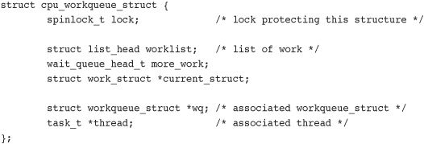

The previous chapter discussed interrupt handlers, the kernel mechanism for dealing with hardware interrupts. Interrupt handlers are an important—indeed, required—part of any operating system. Due to various limitations, however, interrupt handlers can form only the first half of any interrupt processing solution. These limitations include
• Interrupt handlers run asynchronously and thus interrupt other, potentially important, code, including other interrupt handlers. Therefore, to avoid stalling the interrupted code for too long, interrupt handlers need to run as quickly as possible.
• Interrupt handlers run with the current interrupt level disabled at best (if
IRQF_DISABLEDis unset), and at worst (ifIRQF_DISABLEDis set) with all interrupts on the current processor disabled. As disabling interrupts prevents hardware from communicating with the operating systems, interrupt handlers need to run as quickly as possible.
• Interrupt handlers are often timing-critical because they deal with hardware.
• Interrupt handlers do not run in process context; therefore, they cannot block. This limits what they can do.
It should now be evident that interrupt handlers are only a piece of the solution to managing hardware interrupts. Operating systems certainly need a quick, asynchronous, simple mechanism for immediately responding to hardware and performing any time-critical actions. Interrupt handlers serve this function well; but other, less critical work can and should be deferred to a later point when interrupts are enabled.
Consequently, managing interrupts is divided into two parts, or halves. The first part, interrupt handlers (top halves), are executed by the kernel asynchronously in immediate response to a hardware interrupt, as discussed in the previous chapter. This chapter looks at the second part of the interrupt solution, bottom halves.
The job of bottom halves is to perform any interrupt-related work not performed by the interrupt handler. In an ideal world, this is nearly all the work because you want the interrupt handler to perform as little work (and in turn be as fast) as possible. By offloading as much work as possible to the bottom half, the interrupt handler can return control of the system to whatever it interrupted as quickly as possible.
Nonetheless, the interrupt handler must perform some of the work. For example, the interrupt handler almost assuredly needs to acknowledge to the hardware the receipt of the interrupt. It may need to copy data to or from the hardware. This work is timing-sensitive, so it makes sense to perform it in the interrupt handler.
Almost anything else is fair game for performing in the bottom half. For example, if you copy data from the hardware into memory in the top half, it certainly makes sense to process it in the bottom half. Unfortunately, no hard and fast rules exist about what work to perform where—the decision is left entirely up to the device-driver author. Although no arrangement is illegal, an arrangement can certainly be suboptimal. Remember, interrupt handlers run asynchronously, with at least the current interrupt line disabled. Minimizing their duration is important. Although it is not always clear how to divide the work between the top and bottom half, a couple of useful tips help:
• If the work is time sensitive, perform it in the interrupt handler.
• If the work is related to the hardware, perform it in the interrupt handler.
• If the work needs to ensure that another interrupt (particularly the same interrupt) does not interrupt it, perform it in the interrupt handler.
• For everything else, consider performing the work in the bottom half.
When attempting to write your own device driver, looking at other interrupt handlers and their corresponding bottom halves can help. When deciding how to divide your interrupt processing work between the top and bottom half, ask yourself what must be in the top half and what can be in the bottom half. Generally, the quicker the interrupt handler executes, the better.
It is crucial to understand why to defer work, and when exactly to defer it. You want to limit the amount of work you perform in an interrupt handler because interrupt handlers run with the current interrupt line disabled on all processors. Worse, handlers that register with IRQF_DISABLED run with all interrupt lines disabled on the local processor, plus the current interrupt line disabled on all processors. Minimizing the time spent with interrupts disabled is important for system response and performance. Add to this the fact that interrupt handlers run asynchronously with respect to other code—even other interrupt handlers—and it is clear that you should work to minimize how long interrupt handlers run. Processing incoming network traffic should not prevent the kernel’s receipt of keystrokes. The solution is to defer some of the work until later.
But when is “later?” The important thing to realize is that later is often simply not now. The point of a bottom half is not to do work at some specific point in the future, but simply to defer work until any point in the future when the system is less busy and interrupts are again enabled. Often, bottom halves run immediately after the interrupt returns. The key is that they run with all interrupts enabled.
Linux is not alone in separating the processing of hardware interrupts into two parts; most operating systems do so. The top half is quick and simple and runs with some or all interrupts disabled. The bottom half (however it is implemented) runs later with all interrupts enabled. This design keeps system latency low by running with interrupts disabled for as little time as necessary.
Unlike the top half, which is implemented entirely via the interrupt handler, multiple mechanisms are available for implementing a bottom half. These mechanisms are different interfaces and subsystems that enable you to implement bottom halves. Whereas the previous chapter looked at just a single way of implementing interrupt handlers, this chapter looks at multiple methods of implementing bottom halves. Over the course of Linux’s history, there have been many bottom-half mechanisms. Confusingly, some of these mechanisms have similar or even dumb names. It requires a special type of programmer to name bottom halves.
This chapter discusses both the design and implementation of the bottom-half mechanisms that exist in 2.6. We also discuss how to use them in the kernel code you write. The old, but long since removed, bottom-half mechanisms are historically significant, and so they are mentioned when relevant.
In the beginning, Linux provided only the “bottom half” for implementing bottom halves. This name was logical because at the time that was the only means available for deferring work. The infrastructure was also known as BH, which is what we will call it to avoid confusion with the generic term bottom half. The BH interface was simple, like most things in those good old days. It provided a statically created list of 32 bottom halves for the entire system. The top half could mark whether the bottom half would run by setting a bit in a 32-bit integer. Each BH was globally synchronized. No two could run at the same time, even on different processors. This was easy to use, yet inflexible; a simple approach, yet a bottleneck.
Later on, the kernel developers introduced task queues both as a method of deferring work and as a replacement for the BH mechanism. The kernel defined a family of queues. Each queue contained a linked list of functions to call. The queued functions were run at certain times, depending on which queue they were in. Drivers could register their bottom halves in the appropriate queue. This worked fairly well, but it was still too inflexible to replace the BH interface entirely. It also was not lightweight enough for performance-critical subsystems, such as networking.
During the 2.3 development series, the kernel developers introduced softirqs and tasklets. With the exception of compatibility with existing drivers, softirqs and tasklets could completely replace the BH interface.1 Softirqs are a set of statically defined bottom halves that can run simultaneously on any processor; even two of the same type can run concurrently. Tasklets, which have an awful and confusing name,2 are flexible, dynamically created bottom halves built on top of softirqs. Two different tasklets can run concurrently on different processors, but two of the same type of tasklet cannot run simultaneously. Thus, tasklets are a good trade-off between performance and ease of use. For most bottom-half processing, the tasklet is sufficient. Softirqs are useful when performance is critical, such as with networking. Using softirqs requires more care, however, because two of the same softirq can run at the same time. In addition, softirqs must be registered statically at compile time. Conversely, code can dynamically register tasklets.
1 It is nontrivial to convert BHs to softirqs or tasklets because BHs are globally synchronized and, therefore, assume that no other BH is running during their execution. The conversion did eventually happen, however, in 2.5.
2 They have nothing to do with tasks. Think of a tasklet as a simple and easy-to-use softirq.
To further confound the issue, some people refer to all bottom halves as software interrupts or softirqs. In other words, they call both the softirq mechanism and bottom halves in general softirqs. Ignore those people. They run with the same crowd that named the BH and tasklet mechanisms.
While developing the 2.5 kernel, the BH interface was finally tossed to the curb because all BH users were converted to the other bottom-half interfaces. Additionally, the task queue interface was replaced by the work queue interface. Work queues are a simple yet useful method of queuing work to later be performed in process context. We get to them later.
Consequently, today 2.6 has three bottom-half mechanisms in the kernel: softirqs, tasklets, and work queues. The old BH and task queue interfaces are but mere memories.
Kernel Timers
Another mechanism for deferring work is kernel timers. Unlike the mechanisms discussed in the chapter thus far, timers defer work for a specified amount of time. That is, although the tools discussed in this chapter are useful to defer work to any time but now, you use timers to defer work until at least a specific time has elapsed.
Therefore, timers have different uses than the general mechanisms discussed in this chapter. A full discussion of timers is given in Chapter 11, “Timers and Time Management.”
This is some seriously confusing stuff, but actually it involves just naming issues. Let’s go over it again.
Bottom half is a generic operating system term referring to the deferred portion of interrupt processing, so named because it represents the second, or bottom, half of the interrupt processing solution. In Linux, the term currently has this meaning, too. All the kernel’s mechanisms for deferring work are “bottom halves.” Some people also confusingly call all bottom halves “softirqs.”
Bottom half also refers to the original deferred work mechanism in Linux. This mechanism is also known as a BH, so we call it by that name now and leave the former as a generic description. The BH mechanism was deprecated a while back and fully removed in the 2.5 development kernel series.
Currently, three methods exist for deferring work: softirqs, tasklets, and work queues. Tasklets are built on softirqs and work queues are their own subsystem. Table 8.1 presents a history of bottom halves.
Table 8.1. Bottom Half Status
With this naming confusion settled, let’s look at the individual mechanisms.
The place to start this discussion of the actual bottom half methods is with softirqs. Softirqs are rarely used directly; tasklets are a much more common form of bottom half. Nonetheless, because tasklets are built on softirqs, we cover them first. The softirq code lives in the file kernel/softirq.c in the kernel source tree.
Softirqs are statically allocated at compile time. Unlike tasklets, you cannot dynamically register and destroy softirqs. Softirqs are represented by the softirq_action structure, which is defined in <linux/interrupt.h>:
struct softirq_action {
void (*action)(struct softirq_action *);
};
A 32-entry array of this structure is declared in kernel/softirq.c:
static struct softirq_action softirq_vec[NR_SOFTIRQS];
Each registered softirq consumes one entry in the array. Consequently, there are NR_SOFTIRQS registered softirqs. The number of registered softirqs is statically determined at compile time and cannot be changed dynamically. The kernel enforces a limit of 32 registered softirqs; in the current kernel, however, only nine exist.3
3 Most drivers use tasklets or work queues for their bottom half. Tasklets are built off softirqs, as the next section explains.
The prototype of a softirq handler, action, looks like
void softirq_handler(struct softirq_action *)
When the kernel runs a softirq handler, it executes this action function with a pointer to the corresponding softirq_action structure as its lone argument. For example, if my_softirq pointed to an entry in the softirq_vec array, the kernel would invoke the softirq handler function as
my_softirq->action(my_softirq);
It seems a bit odd that the kernel passes the entire structure to the softirq handler. This trick enables future additions to the structure without requiring a change in every softirq handler.
A softirq never preempts another softirq. The only event that can preempt a softirq is an interrupt handler. Another softirq—even the same one—can run on another processor, however.
A registered softirq must be marked before it will execute. This is called raising the softirq. Usually, an interrupt handler marks its softirq for execution before returning. Then, at a suitable time, the softirq runs. Pending softirqs are checked for and executed in the following places:
• In the return from hardware interrupt code path
• In the
ksoftirqdkernel thread
• In any code that explicitly checks for and executes pending softirqs, such as the networking subsystem
Regardless of the method of invocation, softirq execution occurs in __do_softirq(), which is invoked by do_softirq(). The function is quite simple. If there are pending softirqs, __do_softirq() loops over each one, invoking its handler. Let’s look at a simplified variant of the important part of __do_softirq():
This snippet is the heart of softirq processing. It checks for, and executes, any pending softirqs. Specifically
pending local variable to the value returned by the local_softirq_pending() macro. This is a 32-bit mask of pending softirqs—if bit n is set, the nth softirq is pending.4 This actually occurs with local interrupts disabled, but that is omitted in this simplified example. If interrupts were not disabled, a softirq could have been raised (and thus be pending) in the intervening time between saving the mask and clearing it. This would result in incorrectly clearing a pending bit.
h is set to the first entry in the softirq_vec.pending is set, h->action(h) is called.h is incremented by one so that it now points to the second entry in the softirq_vec array.pending is right-shifted by one. This tosses the first bit away and moves all other bits one place to the right. Consequently, the second bit is now the first (and so on).h now points to the second entry in the array, and the pending bitmask now has the second bit as the first. Repeat the previous steps.pending is zero, at which point there are no more pending softirqs and the work is done. Note, this check is sufficient to ensure h always points to a valid entry in softirq_vec because pending has at most 32 set bits and thus this loop executes at most 32 times.Softirqs are reserved for the most timing-critical and important bottom-half processing on the system. Currently, only two subsystems—networking and block devices—directly use softirqs. Additionally, kernel timers and tasklets are built on top of softirqs. If you add a new softirq, you normally want to ask yourself why using a tasklet is insufficient. Tasklets are dynamically created and are simpler to use because of their weaker locking requirements, and they still perform quite well. Nonetheless, for timing-critical applications that can do their own locking in an efficient way, softirqs might be the correct solution.
You declare softirqs statically at compile time via an enum in <linux/interrupt.h>. The kernel uses this index, which starts at zero, as a relative priority. Softirqs with the lowest numerical priority execute before those with a higher numerical priority.
Creating a new softirq includes adding a new entry to this enum. When adding a new softirq, you might not want to simply add your entry to the end of the list, as you would elsewhere. Instead, you need to insert the new entry depending on the priority you want to give it. By convention, HI_SOFTIRQ is always the first and RCU_SOFTIRQ is always the last entry. A new entry likely belongs in between BLOCK_SOFTIRQ and TASKLET_SOFTIRQ. Table 8.2 contains a list of the existing tasklet types.
Table 8.2. Softirq Types
Next, the softirq handler is registered at run-time via open_softirq(), which takes two parameters: the softirq’s index and its handler function. The networking subsystem, for example, registers its softirqs like this, in net/core/dev.c:
open_softirq(NET_TX_SOFTIRQ, net_tx_action);
open_softirq(NET_RX_SOFTIRQ, net_rx_action);
The softirq handlers run with interrupts enabled and cannot sleep. While a handler runs, softirqs on the current processor are disabled. Another processor, however, can execute other softirqs. If the same softirq is raised again while it is executing, another processor can run it simultaneously. This means that any shared data—even global data used only within the softirq handler—needs proper locking (as discussed in the next two chapters). This is an important point, and it is the reason tasklets are usually preferred. Simply preventing your softirqs from running concurrently is not ideal. If a softirq obtained a lock to prevent another instance of itself from running simultaneously, there would be no reason to use a softirq. Consequently, most softirq handlers resort to per-processor data (data unique to each processor and thus not requiring locking) and other tricks to avoid explicit locking and provide excellent scalability.
The raison d’être to softirqs is scalability. If you do not need to scale to infinitely many processors, then use a tasklet. Tasklets are essentially softirqs in which multiple instances of the same handler cannot run concurrently on multiple processors.
After a handler is added to the enum list and registered via open_softirq(), it is ready to run. To mark it pending, so it is run at the next invocation of do_softirq(), call raise_softirq(). For example, the networking subsystem would call,
raise_softirq(NET_TX_SOFTIRQ);
This raises the NET_TX_SOFTIRQ softirq. Its handler, net_tx_action(), runs the next time the kernel executes softirqs. This function disables interrupts prior to actually raising the softirq and then restores them to their previous state. If interrupts are already off, the function raise_softirq_irqoff() can be used as a small optimization. For example
/*
* interrupts must already be off!
*/
raise_softirq_irqoff(NET_TX_SOFTIRQ);
Softirqs are most often raised from within interrupt handlers. In the case of interrupt handlers, the interrupt handler performs the basic hardware-related work, raises the softirq, and then exits. When processing interrupts, the kernel invokes do_softirq(). The softirq then runs and picks up where the interrupt handler left off. In this example, the “top half” and “bottom half” naming should make sense.
Tasklets are a bottom-half mechanism built on top of softirqs. As mentioned, they have nothing to do with tasks. Tasklets are similar in nature and behavior to softirqs; however, they have a simpler interface and relaxed locking rules.
As a device driver author, the decision whether to use softirqs versus tasklets is simple: You almost always want to use tasklets. As we saw in the previous section, you can (almost) count on one hand the users of softirqs. Softirqs are required only for high-frequency and highly threaded uses. Tasklets, on the other hand, see much greater use. Tasklets work just fine for the vast majority of cases and are very easy to use.
Because tasklets are implemented on top of softirqs, they are softirqs. As discussed, tasklets are represented by two softirqs: HI_SOFTIRQ and TASKLET_SOFTIRQ. The only difference in these types is that the HI_SOFTIRQ-based tasklets run prior to the TASKLET_SOFTIRQ-based tasklets.
Tasklets are represented by the tasklet_struct structure. Each structure represents a unique tasklet. The structure is declared in <linux/interrupt.h>:
The func member is the tasklet handler (the equivalent of action to a softirq) and receives data as its sole argument.
The state member is exactly zero, TASKLET_STATE_SCHED, or TASKLET_STATE_RUN. TASKLET_STATE_SCHED denotes a tasklet that is scheduled to run, and TASKLET_STATE_RUN denotes a tasklet that is running. As an optimization, TASKLET_STATE_RUN is used only on multiprocessor machines because a uniprocessor machine always knows whether the tasklet is running. (It is either the currently executing code, or not.)
The count field is used as a reference count for the tasklet. If it is nonzero, the tasklet is disabled and cannot run; if it is zero, the tasklet is enabled and can run if marked pending.
Scheduled tasklets (the equivalent of raised softirqs)5 are stored in two per-processor structures: tasklet_vec (for regular tasklets) and tasklet_hi_vec (for high-priority tasklets). Both of these structures are linked lists of tasklet_struct structures. Each tasklet_struct structure in the list represents a different tasklet.
5 Yet another example of the confusing naming schemes at work here. Why are softirqs raised but tasklets scheduled? Who knows? Both terms mean to mark that bottom half pending so that it is executed soon.
Tasklets are scheduled via the tasklet_schedule() and tasklet_hi_schedule() functions, which receive a pointer to the tasklet’s tasklet_struct as their lone argument. Each function ensures that the provided tasklet is not yet scheduled and then calls __tasklet_schedule() and __tasklet_hi_schedule() as appropriate. The two functions are similar. (The difference is that one uses TASKLET_SOFTIRQ and one uses HI_SOFTIRQ.) Writing and using tasklets is covered in the next section. Now, let’s look at the steps tasklet_schedule() undertakes:
state is TASKLET_STATE_SCHED. If it is, the tasklet is already scheduled to run and the function can immediately return.__tasklet_schedule().tasklet_schedule() is manipulating the tasklets.tasklet_vec or tasklet_hi_vec linked list, which is unique to each processor in the system.TASKLET_SOFTIRQ or HI_SOFTIRQ softirq, so do_softirq() executes this tasklet in the near future.At the next earliest convenience, do_softirq() is run as discussed in the previous section. Because most tasklets and softirqs are marked pending in interrupt handlers, do_softirq() most likely runs when the last interrupt returns. Because TASKLET_SOFTIRQ or HI_SOFTIRQ is now raised, do_softirq() executes the associated handlers. These handlers, tasklet_action() and tasklet_hi_action(), are the heart of tasklet processing. Let’s look at the steps these handlers perform:
tasklet_vec or tasklet_hi_vec list for this processor.NULL.TASKLET_STATE_RUN flag. If it is currently running, do not execute it now and skip to the next pending tasklet. (Recall that only one tasklet of a given type may run concurrently.)TASKLET_STATE_RUN flag, so another processor will not run it.count value, to ensure that the tasklet is not disabled. If the tasklet is disabled, skip it and go to the next pending tasklet.count value. Run the tasklet handler.TASKLET_STATE_RUN flag in the tasklet’s state field.The implementation of tasklets is simple, but rather clever. As you saw, all tasklets are multiplexed on top of two softirqs, HI_SOFTIRQ and TASKLET_SOFTIRQ. When a tasklet is scheduled, the kernel raises one of these softirqs. These softirqs, in turn, are handled by special functions that then run any scheduled tasklets. The special functions ensure that only one tasklet of a given type runs at the same time. (But other tasklets can run simultaneously.) All this complexity is then hidden behind a clean and simple interface.
In most cases, tasklets are the preferred mechanism with which to implement your bottom half for a normal hardware device. Tasklets are dynamically created, easy to use, and quick. Moreover, although their name is mind-numbingly confusing, it grows on you: It is cute.
You can create tasklets statically or dynamically. What option you choose depends on whether you have (or want) a direct or indirect reference to the tasklet. If you are going to statically create the tasklet (and thus have a direct reference to it), use one of two macros in <linux/interrupt.h>:
DECLARE_TASKLET(name, func, data)
DECLARE_TASKLET_DISABLED(name, func, data);
Both these macros statically create a struct tasklet_struct with the given name. When the tasklet is scheduled, the given function func is executed and passed the argument data. The difference between the two macros is the initial reference count. The first macro creates the tasklet with a count of zero, and the tasklet is enabled. The second macro sets count to one, and the tasklet is disabled. Here is an example:
DECLARE_TASKLET(my_tasklet, my_tasklet_handler, dev);
This line is equivalent to
This creates a tasklet named my_tasklet enabled with tasklet_handler as its handler. The value of dev is passed to the handler when it is executed.
To initialize a tasklet given an indirect reference (a pointer) to a dynamically created struct tasklet_struct, t, call tasklet_init():
tasklet_init(t, tasklet_handler, dev); /* dynamically as opposed to statically */
The tasklet handler must match the correct prototype:
void tasklet_handler(unsigned long data)
As with softirqs, tasklets cannot sleep. This means you cannot use semaphores or other blocking functions in a tasklet. Tasklets also run with all interrupts enabled, so you must take precautions (for example, disable interrupts and obtain a lock) if your tasklet shares data with an interrupt handler. Unlike softirqs, however, two of the same tasklets never run concurrently—although two different tasklets can run at the same time on two different processors. If your tasklet shares data with another tasklet or softirq, you need to use proper locking (see Chapter 9, “An Introduction to Kernel Synchronization,” and Chapter 10, “Kernel Synchronization Methods”).
To schedule a tasklet for execution, tasklet_schedule() is called and passed a pointer to the relevant tasklet_struct:
tasklet_schedule(&my_tasklet); /* mark my_tasklet as pending */
After a tasklet is scheduled, it runs once at some time in the near future. If the same tasklet is scheduled again, before it has had a chance to run, it still runs only once. If it is already running, for example on another processor, the tasklet is rescheduled and runs again. As an optimization, a tasklet always runs on the processor that scheduled it—making better use of the processor’s cache, you hope.
You can disable a tasklet via a call to tasklet_disable(), which disables the given tasklet. If the tasklet is currently running, the function will not return until it finishes executing. Alternatively, you can use tasklet_disable_nosync(), which disables the given tasklet but does not wait for the tasklet to complete prior to returning. This is usually not safe because you cannot assume the tasklet is not still running. A call to tasklet_enable() enables the tasklet. This function also must be called before a tasklet created with DECLARE_TASKLET_DISABLED() is usable. For example:
You can remove a tasklet from the pending queue via tasklet_kill(). This function receives a pointer as a lone argument to the tasklet’s tasklet_struct. Removing a scheduled tasklet from the queue is useful when dealing with a tasklet that often reschedules itself. This function first waits for the tasklet to finish executing and then it removes the tasklet from the queue. Nothing stops some other code from rescheduling the tasklet, of course. This function must not be used from interrupt context because it sleeps.
Softirq (and thus tasklet) processing is aided by a set of per-processor kernel threads. These kernel threads help in the processing of softirqs when the system is overwhelmed with softirqs. Because tasklets are implemented using softirqs, the following discussion applies equally to softirqs and tasklets. For brevity, we will refer mainly to softirqs.
As already described, the kernel processes softirqs in a number of places, most commonly on return from handling an interrupt. Softirqs might be raised at high rates (such as during heavy network traffic). Further, softirq functions can reactivate themselves. That is, while running, a softirq can raise itself so that it runs again (for example, the networking subsystem’s softirq raises itself). The possibility of a high frequency of softirqs in conjunction with their capability to remark themselves active can result in user-space programs being starved of processor time. Not processing the reactivated softirqs in a timely manner, however, is unacceptable. When softirqs were first designed, this caused a dilemma that needed fixing, and neither obvious solution was a good one. First, let’s look at each of the two obvious solutions.
The first solution is simply to keep processing softirqs as they come in and to recheck and reprocess any pending softirqs before returning. This ensures that the kernel processes softirqs in a timely manner and, most important, that any reactivated softirqs are also immediately processed. The problem lies in high load environments, in which many softirqs occur, that continually reactivate themselves. The kernel might continually service softirqs without accomplishing much else. User-space is neglected—indeed, nothing but softirqs and interrupt handlers run and, in turn, the system’s users get mad. This approach might work fine if the system is never under intense load; if the system experiences moderate interrupt levels, this solution is not acceptable. User-space cannot be starved for significant periods.
The second solution is not to handle reactivated softirqs. On return from interrupt, the kernel merely looks at all pending softirqs and executes them as normal. If any softirqs reactivate themselves, however, they will not run until the next time the kernel handles pending softirqs. This is most likely not until the next interrupt occurs, which can equate to a lengthy amount of time before any new (or reactivated) softirqs are executed. Worse, on an otherwise idle system, it is beneficial to process the softirqs right away. Unfortunately, this approach is oblivious to which processes are runnable. Therefore, although this method prevents starving user-space, it does starve the softirqs and does not take good advantage of an idle system.
In designing softirqs, the kernel developers realized that some sort of compromise was needed. The solution ultimately implemented in the kernel is to not immediately process reactivated softirqs. Instead, if the number of softirqs grows excessive, the kernel wakes up a family of kernel threads to handle the load. The kernel threads run with the lowest possible priority (nice value of 19), which ensures they do not run in lieu of anything important. This concession prevents heavy softirq activity from completely starving user-space of processor time. Conversely, it also ensures that “excess” softirqs do run eventually. Finally, this solution has the added property that on an idle system the softirqs are handled rather quickly because the kernel threads will schedule immediately.
There is one thread per processor. The threads are each named ksoftirqd/n where n is the processor number. On a two-processor system, you would have ksoftirqd/0 and ksoftirqd/1. Having a thread on each processor ensures an idle processor, if available, can always service softirqs. After the threads are initialized, they run a tight loop similar to this:
If any softirqs are pending (as reported by softirq_pending()), ksoftirqd calls do_softirq() to handle them. Note that it does this repeatedly to handle any reactivated softirqs, too. After each iteration, schedule() is called if needed, to enable more important processes to run. After all processing is complete, the kernel thread sets itself TASK_INTERRUPTIBLE and invokes the scheduler to select a new runnable process.
The softirq kernel threads are awakened whenever do_softirq() detects an executed kernel thread reactivating itself.
Although the old BH interface, thankfully, is no longer present in 2.6, it was around for a long time—since the earliest versions of the kernel. Because it had immense staying power, it certainly carries some historical significance that requires more than a passing look. Nothing in this brief section actually pertains to 2.6, but the history is important.
The BH interface is ancient, and it showed. Each BH must be statically defined, and there are a maximum of 32. Because the handlers must all be defined at compile-time, modules could not directly use the BH interface. They could piggyback off an existing BH, however. Over time, this static requirement and the maximum of 32 bottom halves became a major hindrance to their use.
All BH handlers are strictly serialized—no two BH handlers, even of different types, can run concurrently. This made synchronization easy, but it wasn’t beneficial to multiprocessor scalability. Performance on large SMP machines was sub par. A driver using the BH interface did not scale well to multiple processors. The networking layer, in particular, suffered.
Other than these attributes, the BH mechanism is similar to tasklets. In fact, the BH interface was implemented on top of tasklets in 2.4. The 32 possible bottom halves were represented by constants defined in <linux/interrupt.h>. To mark a BH as pending, the function mark_bh() was called and passed the number of the BH. In 2.4, this in turn scheduled the BH tasklet, bh_action(), to run. Before the 2.4 kernel, the BH mechanism was independently implemented and did not rely on any lower-level bottom-half mechanism, much as softirqs are implemented today.
Because of the shortcomings of this form of bottom half, kernel developers introduced task queues to replace bottom halves. Task queues never accomplished this goal, although they did win many new users. In 2.3, the softirq and tasklet mechanisms were introduced to put an end to the BH. The BH mechanism was reimplemented on top of tasklets. Unfortunately, it was complicated to port bottom halves from the BH interface to tasklets or softirqs because of the weaker inherent serialization of the new interfaces.6 During 2.5, however, the conversion did occur when timers and SCSI—the remaining BH users—finally moved over to softirqs. The kernel developers summarily removed the BH interface. Good riddance, BH!
6 That is, the weaker serialization was beneficial to performance but also harder to program. Converting a BH to a tasklet, for example, required careful thinking: Is this code safe running at the same time as any other tasklet? When finally converted, however, the performance was worth it.
Work queues are a different form of deferring work from what we have looked at so far. Work queues defer work into a kernel thread—this bottom half always runs in process context. Thus, code deferred to a work queue has all the usual benefits of process context. Most important, work queues are schedulable and can therefore sleep.
Normally, it is easy to decide between using work queues and softirqs/tasklets. If the deferred work needs to sleep, work queues are used. If the deferred work need not sleep, softirqs or tasklets are used. Indeed, the usual alternative to work queues is kernel threads. Because the kernel developers frown upon creating a new kernel thread (and, in some locales, it is a punishable offense), work queues are strongly preferred. They are really easy to use, too.
If you need a schedulable entity to perform your bottom-half processing, you need work queues. They are the only bottom-half mechanisms that run in process context, and thus, the only ones that can sleep. This means they are useful for situations in which you need to allocate a lot of memory, obtain a semaphore, or perform block I/O. If you do not need a kernel thread to handle your deferred work, consider a tasklet instead.
In its most basic form, the work queue subsystem is an interface for creating kernel threads to handle work queued from elsewhere. These kernel threads are called worker threads. Work queues let your driver create a special worker thread to handle deferred work. The work queue subsystem, however, implements and provides a default worker thread for handling work. Therefore, in its most common form, a work queue is a simple interface for deferring work to a generic kernel thread.
The default worker threads are called events/n where n is the processor number; there is one per processor. For example, on a uniprocessor system there is one thread, events/0. A dual processor system would additionally have an events/1 thread. The default worker thread handles deferred work from multiple locations. Many drivers in the kernel defer their bottom-half work to the default thread. Unless a driver or subsystem has a strong requirement for creating its own thread, the default thread is preferred.
Nothing stops code from creating its own worker thread, however. This might be advantageous if you perform large amounts of processing in the worker thread. Processor-intense and performance-critical work might benefit from its own thread. This also lightens the load on the default threads, which prevents starving the rest of the queued work.
The worker threads are represented by the workqueue_struct structure:
This structure, defined in kernel/workqueue.c, contains an array of struct cpu_workqueue_struct, one per possible processor on the system. Because the worker threads exist on each processor in the system, there is one of these structures per worker thread, per processor, on a given machine. The cpu_workqueue_struct is the core data structure and is also defined in kernel/workqueue.c:

Note that each type of worker thread has one workqueue_struct associated to it. Inside, there is one cpu_workqueue_struct for every thread and, thus, every processor, because there is one worker thread on each processor.
All worker threads are implemented as normal kernel threads running the worker_thread()function. After initial setup, this function enters an infinite loop and goes to sleep. When work is queued, the thread is awakened and processes the work. When there is no work left to process, it goes back to sleep.
The work is represented by the work_struct structure, defined in <linux/workqueue.h>:
struct work_struct {
atomic_long_t data;
struct list_head entry;
work_func_t func;
};
These structures are strung into a linked list, one for each type of queue on each processor. For example, there is one list of deferred work for the generic thread, per processor. When a worker thread wakes up, it runs any work in its list. As it completes work, it removes the corresponding work_struct entries from the linked list. When the list is empty, it goes back to sleep.
Let’s look at the heart of worker_thread(), simplified:
This function performs the following functions, in an infinite loop:
TASK_INTERRUPTIBLE) and adds itself to a wait queue.schedule() and goes to sleep.TASK_RUNNING and removes itself from the wait queue.run_workqueue() to perform the deferred work.The function run_workqueue(), in turn, actually performs the deferred work:
This function loops over each entry in the linked list of pending work and executes the func member of the workqueue_struct for each entry in the linked list:
func, and its argument, data.The relationship between the different data structures is admittedly a bit convoluted. Figure 8.1 provides a graphical example, which should bring it all together.
Figure 8.1. The relationship between work, work queues, and the worker threads.
At the highest level, there are worker threads. There can be multiple types of worker threads; there is one worker thread per processor of a given type. Parts of the kernel can create worker threads as needed. By default, there is the events worker thread. Each worker thread is represented by the cpu_workqueue_struct structure. The workqueue_struct structure represents all the worker threads of a given type.
For example, assume that in addition to the generic events worker type, you also create a falcon worker type. Also, assume you have a four-processor computer. Then there are four events threads (and thus four cpu_workqueue_struct structures) and four falcon threads (and thus another four cpu_workqueue_struct structures). There is one workqueue_struct for the events type and one for the falcon type.
Now, let’s approach from the lowest level, which starts with work. Your driver creates work, which it wants to defer to later. The work_struct structure represents this work. Among other things, this structure contains a pointer to the function that handles the deferred work. The work is submitted to a specific worker thread—in this case, a specific falcon thread. The worker thread then wakes up and performs the queued work.
Most drivers use the existing default worker threads, named events. They are easy and simple. Some more serious situations, however, demand their own worker threads. The XFS filesystem, for example, creates two new types of worker threads.
Using work queues is easy. We cover the default events queue first and then look at creating new worker threads.
The first step is actually creating some work to defer. To create the structure statically at runtime, use DECLARE_WORK:
DECLARE_WORK(name, void (*func)(void *), void *data);
This statically creates a work_struct structure named name with handler function func and argument data.
Alternatively, you can create work at runtime via a pointer:
INIT_WORK(struct work_struct *work, void (*func)(void *), void *data);
This dynamically initializes the work queue pointed to by work with handler function func and argument data.
The prototype for the work queue handler is
void work_handler(void *data)
A worker thread executes this function, and thus, the function runs in process context. By default, interrupts are enabled and no locks are held. If needed, the function can sleep. Note that, despite running in process context, the work handlers cannot access user-space memory because there is no associated user-space memory map for kernel threads. The kernel can access user memory only when running on behalf of a user-space process, such as when executing a system call. Only then is user memory mapped in.
Locking between work queues or other parts of the kernel is handled just as with any other process context code. This makes writing work handlers much easier. The next two chapters cover locking.
Now that the work is created, we can schedule it. To queue a given work’s handler function with the default events worker threads, simply call
schedule_work(&work);
The work is scheduled immediately and is run as soon as the events worker thread on the current processor wakes up.
Sometimes you do not want the work to execute immediately, but instead after some delay. In those cases, you can schedule work to execute at a given time in the future:
schedule_delayed_work(&work, delay);
In this case, the work_struct represented by &work will not execute for at least delay timer ticks into the future. Using ticks as a unit of time is covered in Chapter 10.
Queued work is executed when the worker thread next wakes up. Sometimes, you need to ensure that a given batch of work has completed before continuing. This is especially important for modules, which almost certainly want to call this function before unloading. Other places in the kernel also might need to make certain no work is pending, to prevent race conditions.
For these needs, there is a function to flush a given work queue:
void flush_scheduled_work(void);
This function waits until all entries in the queue are executed before returning. While waiting for any pending work to execute, the function sleeps. Therefore, you can call it only from process context.
Note that this function does not cancel any delayed work. That is, any work that was scheduled via schedule_delayed_work(), and whose delay is not yet up, is not flushed via flush_scheduled_work(). To cancel delayed work, call
int cancel_delayed_work(struct work_struct *work);
This function cancels the pending work, if any, associated with the given work_struct.
If the default queue is insufficient for your needs, you can create a new work queue and corresponding worker threads. Because this creates one worker thread per processor, you should create unique work queues only if your code needs the performance of a unique set of threads.
You create a new work queue and the associated worker threads via a simple function:
struct workqueue_struct *create_workqueue(const char *name);
The parameter name is used to name the kernel threads. For example, the default events queue is created via
struct workqueue_struct *keventd_wq;
keventd_wq = create_workqueue("events");
This function creates all the worker threads (one for each processor in the system) and prepares them to handle work.
Creating work is handled in the same manner regardless of the queue type. After the work is created, the following functions are analogous to schedule_work() and schedule_delayed_work(), except that they work on the given work queue and not the default events queue.
Finally, you can flush a wait queue via a call to the function
flush_workqueue(struct workqueue_struct *wq)
As previously discussed, this function works identically to flush_scheduled_work(), except that it waits for the given queue to empty before returning.
Like the BH interface, which gave way to softirqs and tasklets, the work queue interface grew out of shortcomings in the task queue interface. The task queue interface (often called simply tq in the kernel), like tasklets, also has nothing to do with tasks in the process sense.7 The users of the task queue interface were ripped in half during the 2.5 development kernel. Half of the users were converted to tasklets, whereas the other half continued using the task queue interface. What was left of the task queue interface then became the work queue interface. Briefly looking at task queues, which were around for some time, is a useful historical exercise.
7 Bottom-half names are apparently a conspiracy to confuse new kernel developers. Seriously, these names are awful.
Task queues work by defining a bunch of queues. The queues have names, such as the scheduler queue, the immediate queue, or the timer queue. Each queue is run at a specific point in the kernel. A kernel thread, keventd, ran the work associated with the scheduler queue. This was the precursor to the full work queue interface. The timer queue was run at each tick of the system timer, and the immediate queue was run in a handful of different places to ensure it was run “immediately” (hack!). There were other queues, too. Additionally, you could dynamically create new queues.
All this might sound useful, but the reality is that the task queue interface was a mess. All the queues were essentially arbitrary abstractions, scattered about the kernel as if thrown in the air and kept where they landed. The only meaningful queue was the scheduler queue, which provided the only way to defer work to process context.
The other good thing about task queues was the brain-dead simple interface. Despite the myriad of queues and the arbitrary rules about when they ran, the interface was as simple as possible. But that’s about it—the rest of task queues needed to go.
The various task queue users were converted to other bottom-half mechanisms. Most of them switched to tasklets. The scheduler queue users stuck around. Finally, the keventd code was generalized into the excellent work queue mechanism we have today, and task queues were finally ripped out of the kernel.
The decision over which bottom half to use is important. In the current 2.6 kernel, you have three choices: softirqs, tasklets, and work queues. Tasklets are built on softirqs and, therefore, both are similar. The work queue mechanism is an entirely different creature and is built on kernel threads.
Softirqs, by design, provide the least serialization. This requires softirq handlers to go through extra steps to ensure that shared data is safe because two or more softirqs of the same type may run concurrently on different processors. If the code in question is already highly threaded, such as in a networking subsystem that is chest-deep in per-processor variables, softirqs make a good choice. They are certainly the fastest alternative for timing-critical and high-frequency uses.
Tasklets make more sense if the code is not finely threaded. They have a simpler interface and, because two tasklets of the same type might not run concurrently, they are easier to implement. Tasklets are effectively softirqs that do not run concurrently. A driver developer should always choose tasklets over softirqs, unless prepared to utilize per-processor variables or similar magic to ensure that the softirq can safely run concurrently on multiple processors.
If your deferred work needs to run in process context, your only choice of the three is work queues. If process context is not a requirement—specifically, if you have no need to sleep—softirqs or tasklets are perhaps better suited. Work queues involve the highest overhead because they involve kernel threads and, therefore, context switching. This is not to say that they are inefficient, but in light of thousands of interrupts hitting per second (as the networking subsystem might experience), other methods make more sense. For most situations, however, work queues are sufficient.
In terms of ease of use, work queues take the crown. Using the default events queue is child’s play. Next come tasklets, which also have a simple interface. Coming in last are softirqs, which need to be statically created and require careful thinking with their implementation.
Table 8.3 is a comparison between the three bottom-half interfaces.
Table 8.3. Bottom Half Comparison
In short, normal driver writers have two choices. First, do you need a schedulable entity to perform your deferred work—fundamentally, do you need to sleep for any reason? Then work queues are your only option. Otherwise, tasklets are preferred. Only if scalability becomes a concern do you investigate softirqs.
We have not discussed locking yet, which is such a fun and expansive topic that we devote the next two chapters to it. Nonetheless, you need to understand that it is crucial to protect shared data from concurrent access while using bottom halves, even on a single processor machine. Remember, a bottom half can run at virtually any moment. You might want to come back to this section after reading the next two chapters if the concept of locking is foreign to you.
One of the benefits of tasklets is that they are serialized with respect to themselves: The same tasklet will not run concurrently, even on two different processors. This means you do not have to worry about intra-tasklet concurrency issues. Inter-tasklet concurrency (that is, when two different tasklets share the same data) requires proper locking.
Because softirqs provide no serialization, (even two instances of the same softirq might run simultaneously), all shared data needs an appropriate lock.
If process context code and a bottom half share data, you need to disable bottom-half processing and obtain a lock before accessing the data. Doing both ensures local and SMP protection and prevents a deadlock.
If interrupt context code and a bottom half share data, you need to disable interrupts and obtain a lock before accessing the data. This also ensures both local and SMP protection and prevents a deadlock.
Any shared data in a work queue requires locking, too. The locking issues are no different from normal kernel code because work queues run in process context.
Chapter 9, “An Introduction to Kernel Synchronization,” provides a background on the issues surrounding concurrency, and Chapter 10 covers the kernel locking primitives. These chapters cover how to protect data that bottom halves use.
Normally, it is not sufficient to only disable bottom halves. More often, to safely protect shared data, you need to obtain a lock and disable bottom halves. Such methods, which you might use in a driver, are covered in Chapter 10. If you are writing core kernel code, however, you might need to disable just the bottom halves.
To disable all bottom-half processing (specifically, all softirqs and thus all tasklets), call local_bh_disable(). To enable bottom-half processing, call local_bh_enable(). Yes, the function is misnamed; no one bothered to change the name when the BH interface gave way to softirqs. Table 8.4 is a summary of these functions.
Table 8.4. Bottom Half Control Methods
The calls can be nested—only the final call to local_bh_enable() actually enables bottom halves. For example, the first time local_bh_disable() is called, local softirq processing is disabled. If local_bh_disable() is called three more times, local processing remains disabled. Processing is not reenabled until the fourth call to local_bh_enable().
The functions accomplish this by maintaining a per-task counter via the preempt_count (interestingly, the same counter used by kernel preemption).8 When the counter reaches zero, bottom-half processing is possible. Because bottom halves were disabled, local_bh_enable() also checks for any pending bottom halves and executes them.
8 This counter is used both by the interrupt and bottom-half subsystems. Thus, in Linux, a single per-task counter represents the atomicity of a task. This has proven useful for work such as debugging sleeping-while-atomic bugs.
The functions are unique to each supported architecture and are usually written as complicated macros in <asm/softirq.h>. The following are close C representations for the curious:
These calls do not disable the execution of work queues. Because work queues run in process context, there are no issues with asynchronous execution, and thus, there is no need to disable them. Because softirqs and tasklets can occur asynchronously (say, on return from handling an interrupt), however, kernel code may need to disable them. With work queues, on the other hand, protecting shared data is the same as in any process context. Chapters 8 and 9 give the details.
In this chapter, we covered the three mechanisms used to defer work in the Linux kernel: softirqs, tasklets, and work queues. We went over their design and implementation. We discussed how to use them in your own code and we insulted their poorly conceived names. For historical completeness, we also looked at the bottom-half mechanisms that existed in previous versions of the Linux kernel: BH’s and task queues.
We talked a lot in this chapter about synchronization and concurrency because such topics apply quite a bit to bottom halves. We even wrapped up the chapter with a discussion on disabling bottom halves for reasons of concurrency protection. It is now time to dive head first into these topics. Chapter 9 discusses kernel synchronization and concurrency in the abstract, providing a foundation for understanding the issues at the heart of the problem. Chapter 10 discusses the specific interfaces provided by our beloved kernel to solve these problems. Armed with the next two chapters, the world is your oyster.